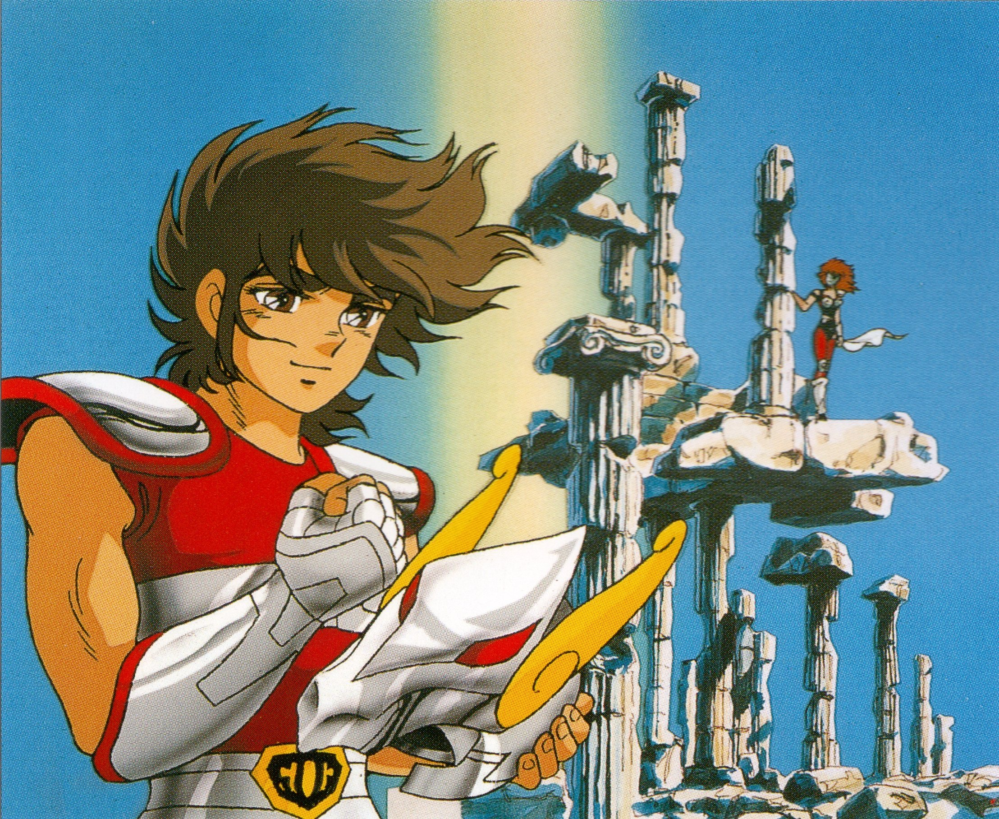

<md-toolbar md-theme="red" md-scroll-shrink class="navbar">
    <div class="md-toolbar-tools">
        <div layout="row" layout-align="center center" layout-fill>
            <div flex>
                <a href ng-click="navbar.displayMenu()">
                    <i class="fa fa-navicon"></i>
                </a>
            </div>
            <div flex>
                <dgit branchiv layout="row" layout-align="end center" layout-fill>
                    <div flex>
                        
                    </div>
                </div>
            </div>
        </div>
</md-toolbar>
<div layout="row">
    <md-sidenav class="md-sidenav-left md-whiteframe-z2" md-component-id="menu">
    </md-sidenav>
</div>